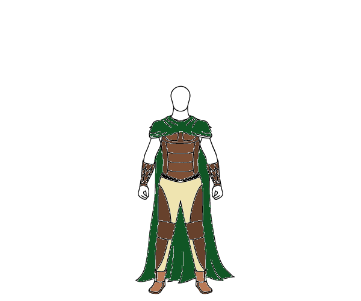
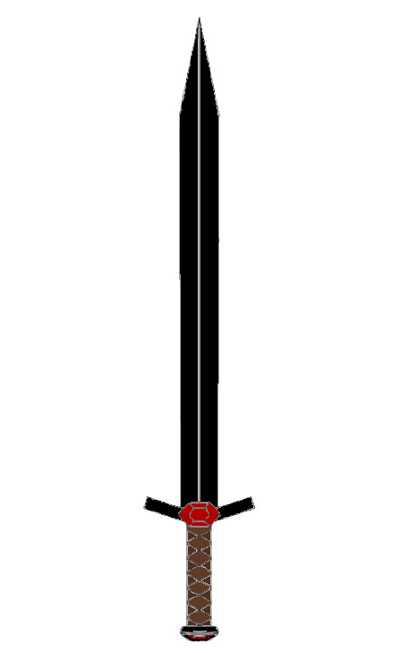
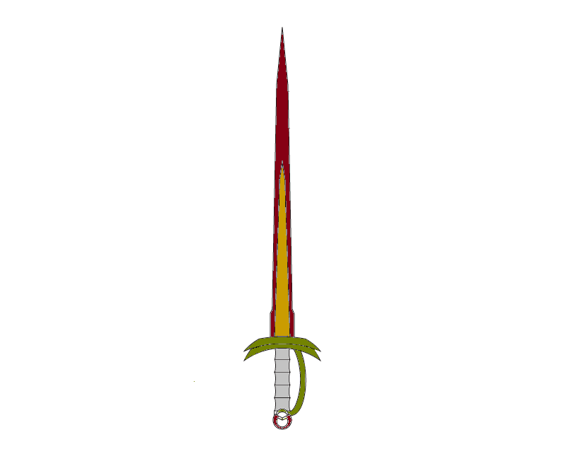
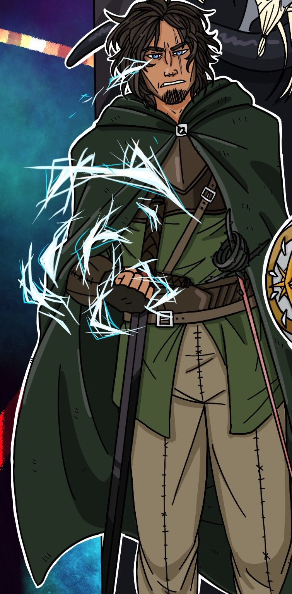

A little backstory about the story you are about to read, this story is an excert from my first D&D characters final years. I wrote this story as a closing for this characters life because I felt that after holding his dying wife in his arms, becoming a literal human lightning rod to gain power, exacting revenge on his wife killer, and finally giving up a life of adventuring to raise his daughter, he deserved some type of closer. So I named this two page story "Galahad's Final Chapter" where I talked about his life after the campaign and finally his death. I hope you enjoy this exert from "Galahad"s Final Chapter".
For the next twenty years, Galahad lived a good life in Eldrish and followed the tales of two adventures: A Death Knight named Morgon Tempest and a Bard named Arthur Cindrgalel, until his death the following year where he passed away without a spark. Again, his remaining adventuring companions were tracked down and were invited to his funeral. The funeral was held at his home and he was buried next to his wife with his armor, his swords, the platinum crown, and the two rings he always wore on a chain around his neck. His headstone read, “Here lies Galahad Eglador, Husband and Father, A man ruled by his anger and by his passion for those he loved, Age 58.”. As the last bit of dirt covered his grave, those of you present caught sight of two transparent figures standing at the edge of the woods. One was someone you recognized immediately as a young Galahad and the other who he held close in an embrace was a wood elf female with blonde hair, blue eyes, and a kind smile. Somewhere in your mind, you could tell that this female was his wife Rose. As they turned and looked at you all, they each held up an arm and waved at you. None of you would ever forget this sight for the rest of your days because for the first time since meeting Galahad, his eyes held no anger or remorse and you could tell he was at peace. The two of them finished waving and turned to walk into the woods holding hands, before they entered they turned towards each other and with a smile entered into a kiss. With this the pair started to slowly disappear until they could be seen no more and all that was left in their place was a single blood red rose with lightning tracing its petals. So ends the story of Galahad Eglador, a ranger turned lightning lord.
The following images were designed with the help of the website Roll For Fantasy, but the assembly and color come from me. First you have Galahad's armor, next is his longsword Dark Striker, and finaly is his rapier Thorn which had belonged to his wife.
  For the following image, all credit goes to Chloe who was a member of that campaign and was the local artist for the group. This image is a cropped version of the full image of all the party members.
